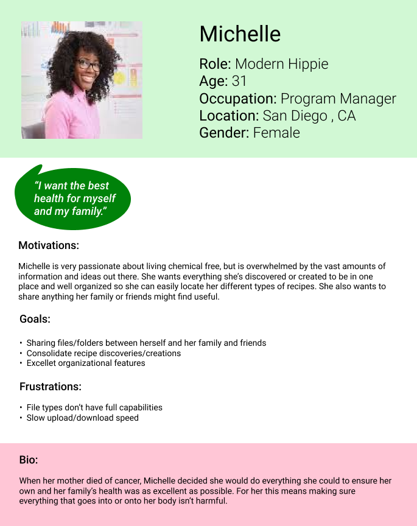
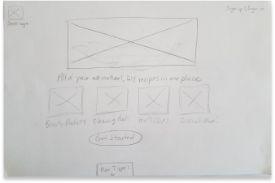

Summary
I conducted the research to determine what niche market to enter into for a cloud storage app and what features to include in the app. Through User Surveys, Personas, Stories, and Flows, I discovered the target audience and how they would use the app. I also undertook all of the branding, summarized it in a Style Guide, and implemented the UI via Wireframes, Hi-Fi Mockups, Prototypes, and User Testing of those deliverables.
Problem
Create a cloud storage app that allows users to
create recipes, upload videos, images, PDFs, etc., organize content via folders, and share items/folder and vice versa
AND
Figure out a target audience, device focus (web, mobile, or both), and the name and branding of the app.
Solution
Modern Garden: a cloud storage app where users can have all of their all-natural, DIY recipes in one place.

Discovery and Research
Competitive Analysis
Since cloud storage for this niche market doesn’t exist, I conducted a competitive analysis between the three most popular cloud storage services: Google Drive, Dropbox, and One Drive. By looking at their strengths and weaknesses, I determined I definitely wanted an ample free storage plan as well as good prices for the paid plans. I also determined that since the big names in cloud storage are multi-purpose and general, the best way for a new competitor to enter the market is by specializing in something specific, finding an unexploited niche.
Design Research
Once “all natural, DIY recipes” was the decided niche, I looked at Pinterest, but it didn’t solve the problems. It only provides links to outside sources. So I looked at websites and blogs that feature these recipes to get an idea of how the recipes are displayed, what types of people would use this, and how I could later brand the app.

I also looked at Cookpad, a recipe creating and sharing app, to get an idea of what to include for the recipe creation page. Although food recipes are different, so it was merely for inspiration.
User Personas
From the results of my survey, I came up with two personas. The users for this app include an enthusiast who wants to consolidate all the types of recipes she’s discovered in one place for herself and her family and a social media influencer who wants to create, organize, and share content in tandem with her social media channels.

Information Architecture
User Flows
I generated some User Stories, prioritized them, and selected the following to mature into User Flows:
I want to create an account
I want to sign into my account
I want to create a recipe
I want to upload files
I want to share a file/folder
I want to upgrade my plan


Wireframes


Usability Test
I turned these wireframes into a clickable prototype and conducted some usability tests.
My participants had the following feedback:
Straightforward, but bland. Needs flexibility and functionality.
Recommended a confirm password box on the sign up page, more detail
for the payment page (ie: drop down for country selection and a
question mark next to CVV), magnifying glass in search bar, and
meter bar to help visualize how much storage is left.


Visual Design
Branding
Looking again at those DIY recipe websites, I got some inspiration for how I want this app to look. I decided on a peaceful, bright, and modern brand.
Next I created a mood board and style guide to complete the branding process.
The greens in the color pallette represent the peacefulness of nature and the pinks give it that bright pop.
The ample white space and high contrast gives it that modern feel.

The typeface is sans serif and naturally bold to reflect the modern characteristic and humanist to look more flowy and natural.
Logo Iterations
After a plethora of sketches of a potential logo, I took my favorites to the digital drawing board and initially decided on this:
I really liked how the M and G served as a visual representation of part of a flower, but the feedback I received was that it looked like a tooth and that a more abstract approach might work better. My second attempt looked like this:
Now that the logo was more abstract, I was told that it would be better to type out Modern Garden and have the logo be separate to avoid confusion. Here’s the final version:
Hi-fi Mockup Iterations

For a “modern” app, my 1st attempt was a little dated looking, but a few tweaks after some feedback got things going.
Making the images bigger and the logo smaller give the landing page more balance, expanding the colored sectional and skewing the edges makes the page more interesting, and the large thin arrows, shadowed cards for the plan types, and sharp edges all push it to that modern look. The pages with the form fields looked pretty good overall, I just removed the black borders around the field entries and gave them inner shadows which looks much sleeker.
Another Usability Test
I did another round of usability tests with my mockups and made the following changes based on the results:
Raise hierarchy of headline on landing page (ie: larger font)
Add “... and more!” after “paints/dyes” on landing page to indicate options not limited.
Bold “upgrade storage” on dashboard
More options on sidebar of dashboard (recent and favorites)
Which created the final product:

Conclusion
I found that off the bat, I nailed the color scheme. There was good balance of negative space and contrast in colors. However, I didn’t have a good eye for modern design, but after some guidance from the lead designer I was able to re-imagine my ideas into a more appealing site. As a junior designer with only one project under my belt thus far, I had plenty of doubts in my ability in general. There’s a reason the design process exists though. It really helps you walk through every detail and make informed design decisions. Constant feedback and iterations is also key. As I keep practicing I’ll only get better and faster. With more time I probably would’ve included more detail and functionality. I learned a lot about borders, shadows, iconography, and how they’re all incorporated to portray the branding accurately. I’ll use this to make my first iterations a bit more solid and fleshed out so that subsequent iterations can be even more detailed and refined.